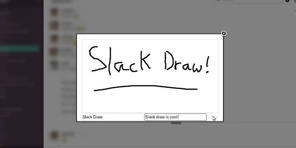
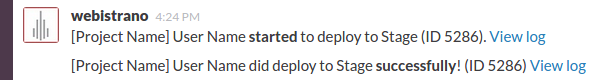
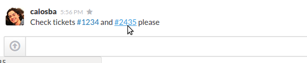
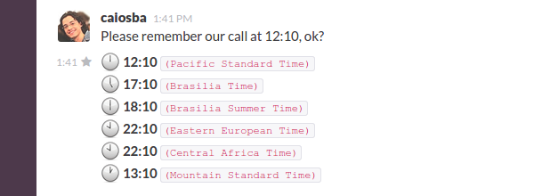

Hello! This page lists some integrations that I wrote to the awesome Slack. They are also listed on the Slack integrations page.
A Google Chrome extension to draw on Slack and share the drawings with the team.
A Ruby On Rails plugin for Webistrano to send deployment updates to Slack channels.
A Git hook (Bash script) that runs the test suite of a Ruby On Rails application after each commit and posts the result on a Slack channel - basically, a continuous integration solution cheaper than Travis (but not so good).
A Google Chrome extension to turn issue tracker numbers into links. For example, you can configure it to turn issues numbers (e.g.: #1234) into links to the issue on your instance of Redmine, Mantis, etc.
An integration for Slack that converts any time string in a message to all timezones where the team is. It runs as a software on a server listening for new messages.
